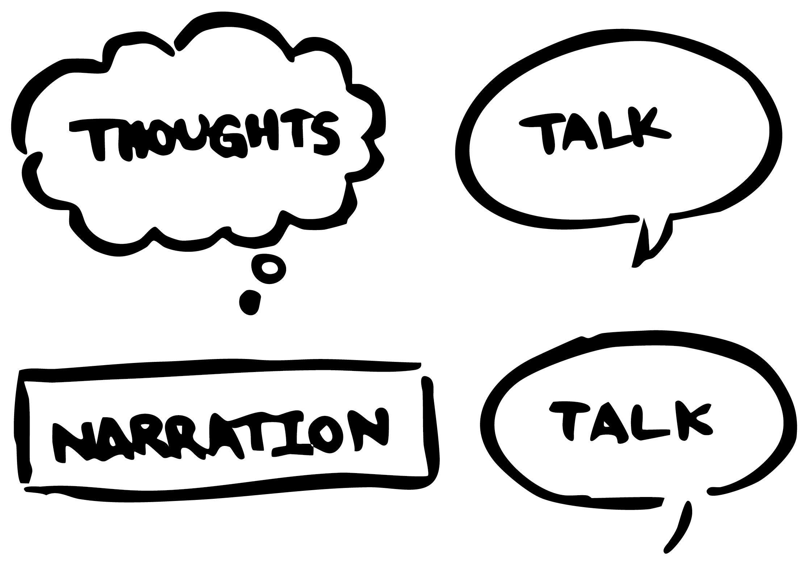
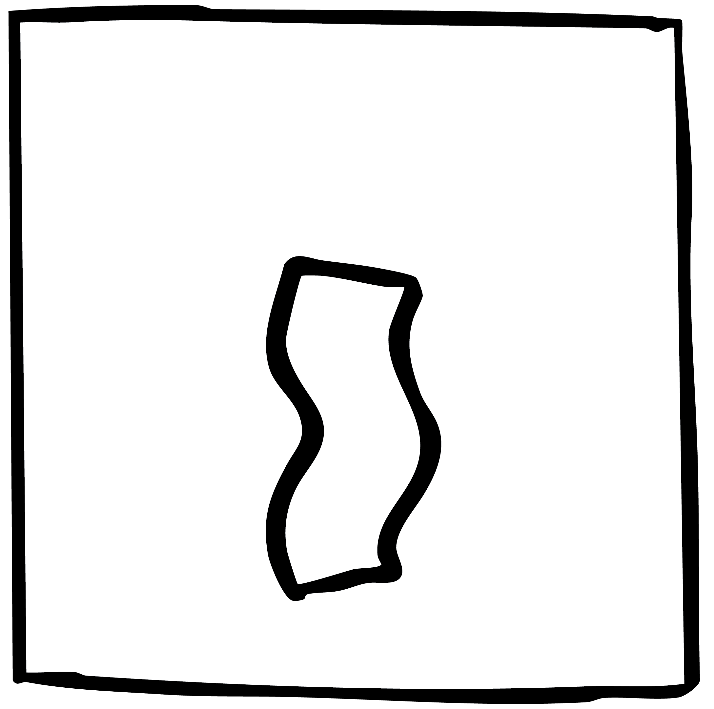
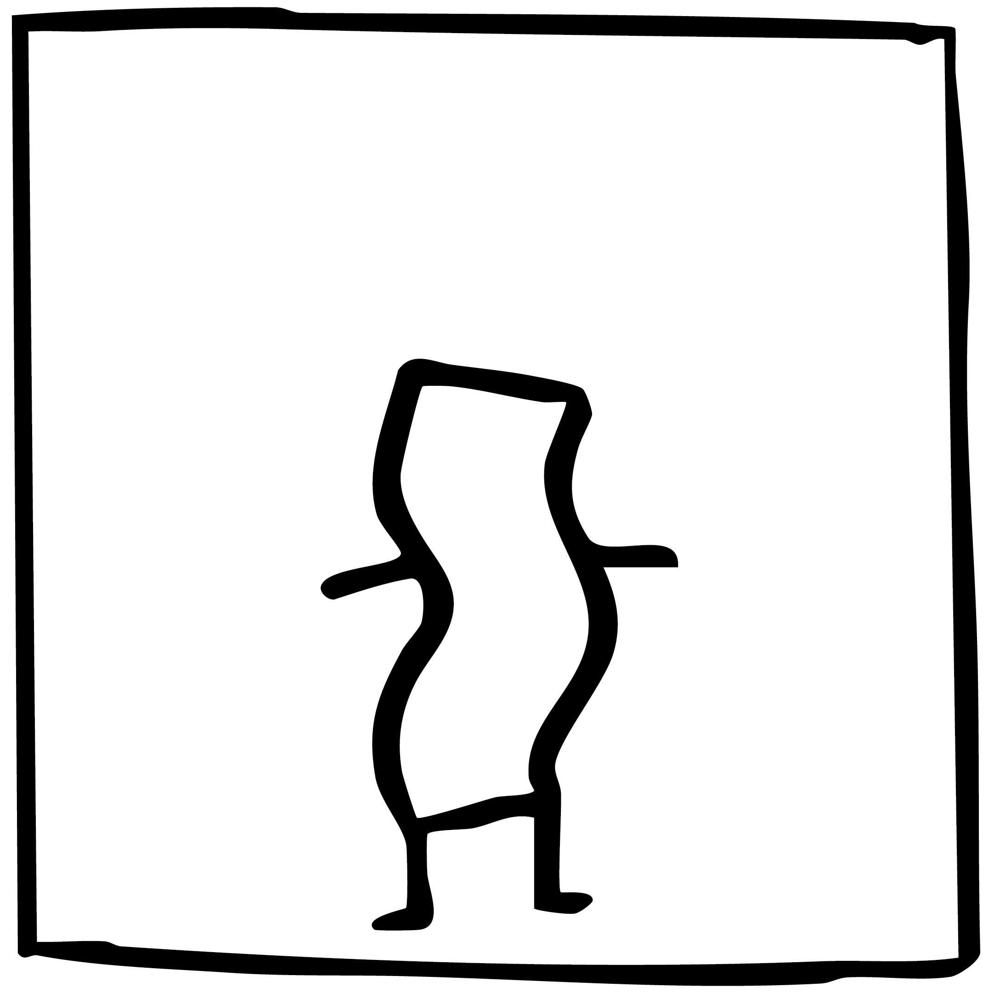
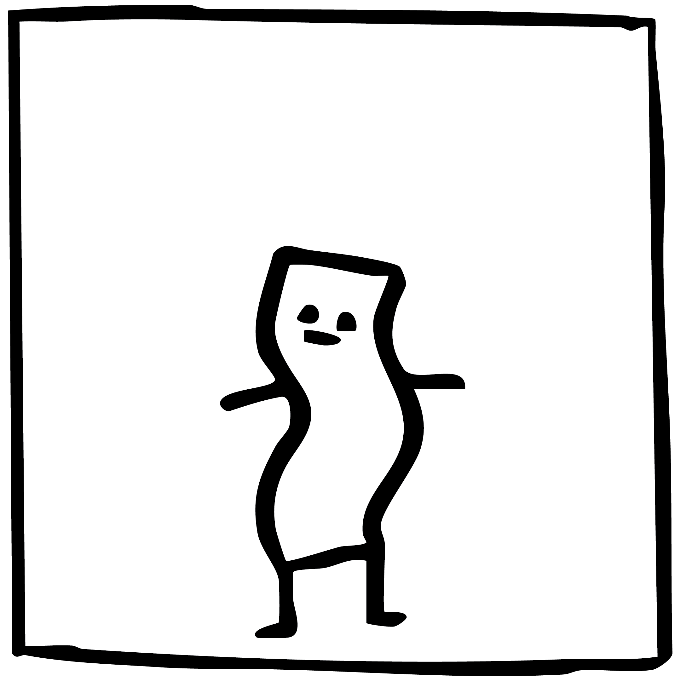
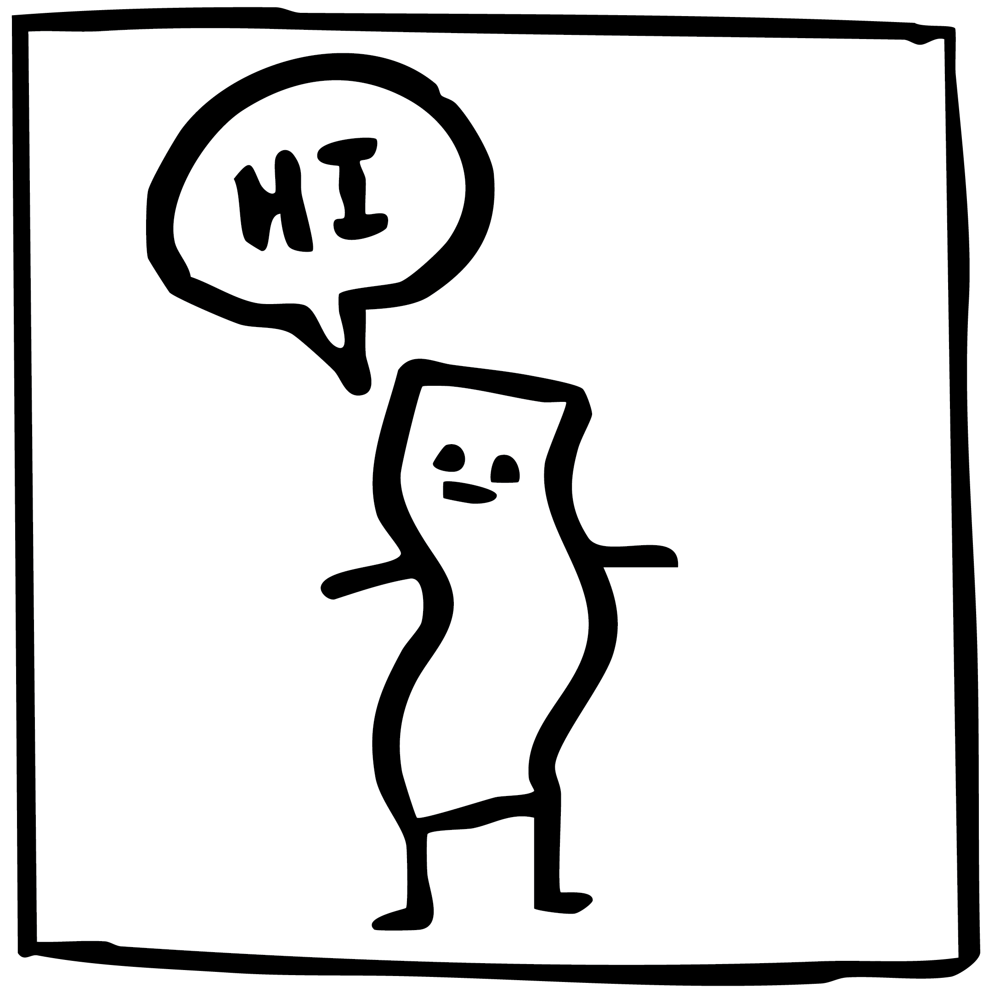
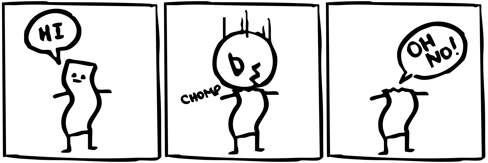

Speech bubbles in cartoons can be for dialogue, narration, or thoughts. Speech bubbles can come in all different shapes and sizes. Sometimes the appearance can affect the mood of the speech. For example, a spikey, large bubble could be used for a shouting character. Below are the common bubble shapes and uses:
Character design can be a complex process, but it doesn't always need to be. Characters can be as simple as a stick figure! Sometimes all it takes is an interesting shape, some arms and then some legs. Lets begin by drawing a shape!
| You could choose the shape of an object near you, or a completely unique shape! I'm going to draw a squiggly shape; it kind of looks like bacon! |  |
| He needs some arms and legs! I will just draw 4 lines. |  |
| We can make the character a face now. |  |
| To make him say something we can add a generic speech bubble above him and some text inside. Make sure the tail points towards who is speaking! |  |
Now that we have a character, we can add some action. Lets make a short story to go along with our character. A story may sound intimidating, but we can boil it down to the fundementals. A story contains: a beginning, middle, and end.
We can accomplish this in only three frames! It never needs to be over complicated. For example:
The first frame is the introduction; we meet our character. Then something happens! Afterwards, we conclude the story with the character acknowledging what happened. That's all it takes! We now have a completed comic.